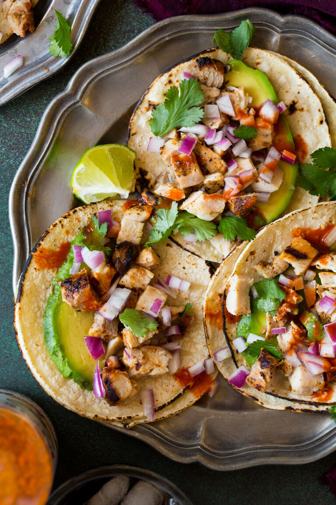

Chicken Street Tacos Recipe
Ingredients:
- 1 pound pollo para asar seasoned, boneless, skinless chicken
- 1 onion, diced
- 1/2 cup chopped cilantro
- 8 corn tortillas
Steps:
- Preheat an outdoor grill for medium-high heat and lightly oil the grate.
- Grill chicken, turning occasionally, until juices run clear and chicken is no longer pink at the center, about 7 minutes.
An instant-read thermometer, inserted near the center, should read at least 165 degrees F (74 degrees C).
- Heat corn tortillas until soft and pliable in the microwave, about 1 minute. Top with chicken, onions, and cilantro.